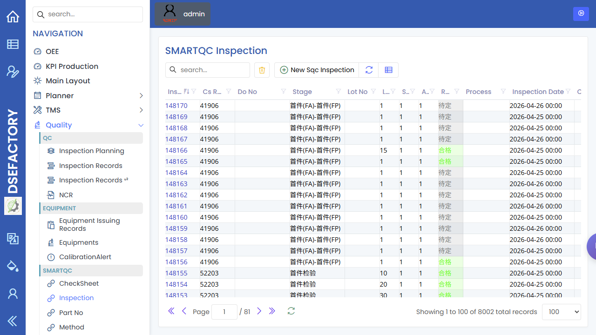

操作员手册
English | 中文
您是车间操作员。您的工作是执行已分派作业、上报现场情况、完成必要检查，并及时升级阻塞。 根据现场部署，日常执行可能在专用终端/看板流程中完成；本 Web 手册记录对应的工单、队列、 手动任务与质量录入。
日常流程
开始班次
|
v
确认分派作业与机台
|
v
运行作业、上报产出、停机与问题
|
v
完成必要检验或 SMARTQC 录入
|
v
交接未完成工作
|
v
结束班次最常用的屏幕
| 屏幕 | 您在这里做什么 |
|---|---|
| 队列系统 | 查看机台或产线等待执行的作业。 |
| 工单 | 查询工单状态、零件、数量、交期与相关工序明细。 |
| 手动任务 | 复查可能出现在指定流程中的任务定义；实时工作仍以指定队列或报工页面为准。 |
| 检验录入 | 在当前 SMARTQC 检验流程中录入测量值。 |
| 检验记录 | 确认已完成检验是否保存、是否合格。 |
开工前
作业中
| 事件 | 怎么做 |
|---|---|
| 机台开始加工 | 按部署的终端或现场流程确认开始。 |
| 产生数量 | 通过终端或授权的生产上报流程记录产出。 |
| 机台异常停机 | 上报停机，或通知生产主管。 |
| 需要检验 | 使用检验录入或指定质量页面。 |
| 无法继续生产 | 通知生产主管，并准备好工单、机台、零件与原因。 |
您通常不做的
- 创建或修改零件、BOM、配方、机台或 NC 程序。这些由生产工程师、
计划员或管理员负责。
- 定义检验表。这由质量工程师负责。
- 修改用户权限或主配置。这由管理员负责。
常见问题
| 问题 | 可能原因 | 下一步 |
|---|---|---|
| 看不到分派给我的工单 | 工单未发布、队列过滤不同、用户/机台分配错误 | 请生产主管或计划员检查队列与工单状态 |
| 检验录入的保存按钮不可用 | 必填字段为空，或角色没有权限 | 先检查必填字段，再升级给 QA 或管理员 |
| 工单明细看起来不对 | 配方、BOM、零件修订或 NC 程序可能错误 | 升级给生产主管或生产工程师 |
截图
建议为本角色补充以下截图：
| 截图 | 建议页面 |
|---|---|
| 机台队列 | 队列系统 |
| 工单查询 | 工单 |
| 手动任务列表 | 手动任务 |
| 检验记录查询 | 检验记录 |
| SMARTQC 检验录入 | 检验录入 |

队列截图展示已登录后的 Queue System 页面，用于查看各工位和工序等待执行的工作。

SMARTQC 截图展示已登录后的检验录入页面，操作员在需要测量或质量检查时使用该页面。

手动任务截图展示任务定义页面。已分派的手动工作仍需要在演示使用的队列或报工页面中确认。

检验记录截图展示生产或质量复查后查看已保存检验结果的位置。